TẤT CẢ CÁC LOẠI SẢN PHẨM VỀ BÓNG ĐÁ
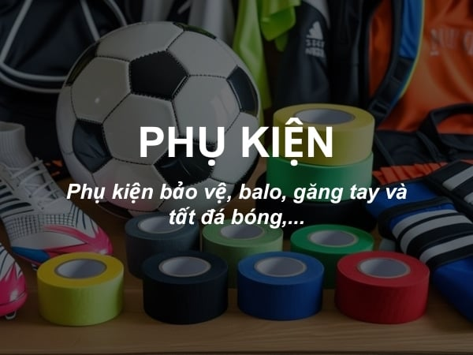
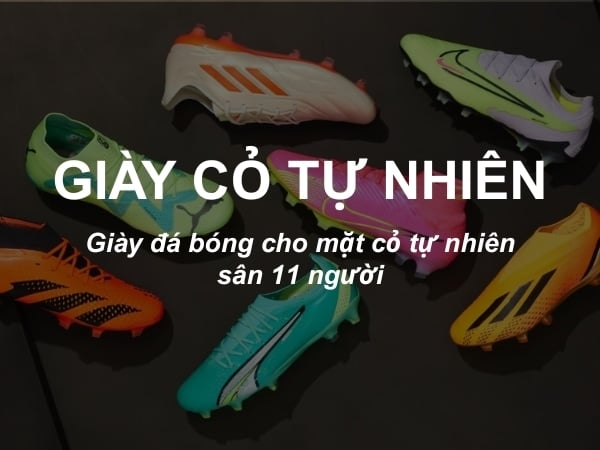
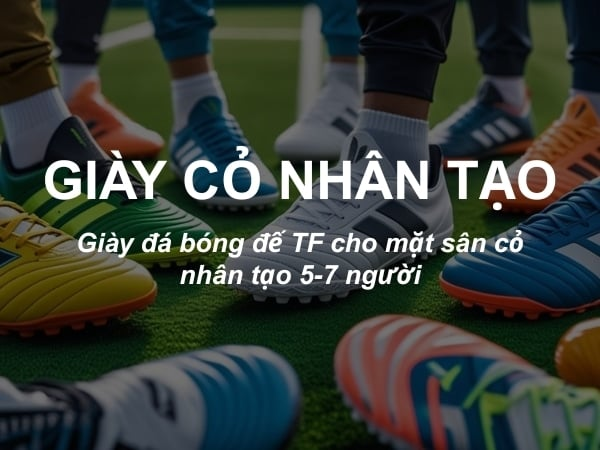
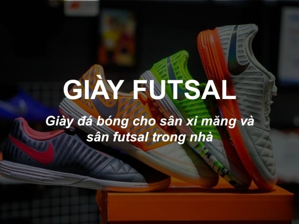




Giày đá bóng cỏ tự niên là loại giày có thiết kế đinh đặc biệt (FG, AG-PRO, MG) để hỗ trợ chơi bóng trên sân cỏ 11 người. Đến với SGUSPORT bạn có thể dễ dàng trải nghiệm những mẫu giày cỏ tự nhiên mới nhất và được săn đón nhiều nhất từ các thương hiệu hang đầu trong và ngoài nucows hiện nay như Nike, Adidas, Puma, Mizuno.
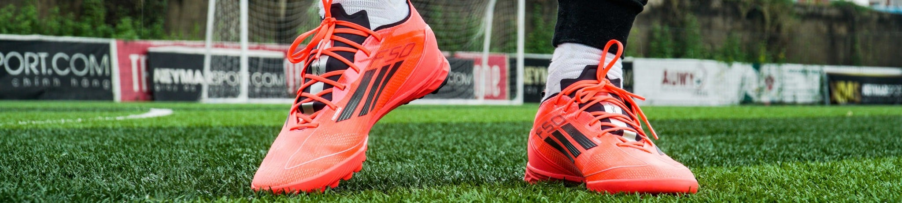
Giày đá bóng sân cỏ nhân tạo là giày đá bóng được thiết kế dành riêng cho sân cỏ nhân tạo, đế cao su có đinh dăm, có độ bám sân khá tốt. Mỗi hang giày sẽ sản xuất đế giày đinh dăm TF có độ dài ngắn khác nhau. Đến với SGUSPORT bạn có thể dễ dàng trải nghiệm những mẫu giày cỏ nhân tạo mới nhất và được săn đón nhiều nhất từ các thương hiệu hang` đầu trong và ngoài nước hiện nay như Nike, Adidas, Mizuno,..
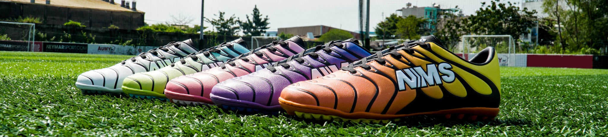
Giày Futsal là dòng giày đá bóng được thiết kế đặc biệt dành cho mặt sân sàn gỗ hoặc bê tông, với bề mặt đế IC (Non-Marking) bằng phẳng cùng các rãnh nhỏ giúp tăng độ bám, hỗ trợ tối đa khả năng kiểm soát bóng bằng gầm giày, xoay trở linh hoạt và thực hiện các động tác kỹ thuật. Đến với SGUSPORT bạn có thể dễ dàng trải nghiệm những mẫu giày Futsal mới nhất và được săn đón nhiều nhất từ các thương hiệu hàng đầu trong và ngoài nước hiện nay.
Thương hiệu cung cấp giày bóng đá chính hãng và các phụ kiện bóng đá lớn nhất thế giới, được thành lập năm 1964 tại Hoa Kỳ, là biểu tượng của tốc độ, kỹ thuật và phong cách thể thao. SGUSPORT mang đến những mẫu Nike chính hãng từ dòng Tiempo, Mercurial, đến Phantom, phục vụ mọi vị trí trên sân.
Dòng giày cảm giác (TOUCH) nổi tiếng với da tự nhiên mềm mại, cho cảm giác êm ái trong từng pha chạm bóng. Được nhiều hậu vệ và tiền vệ trung tâm tin dùng.
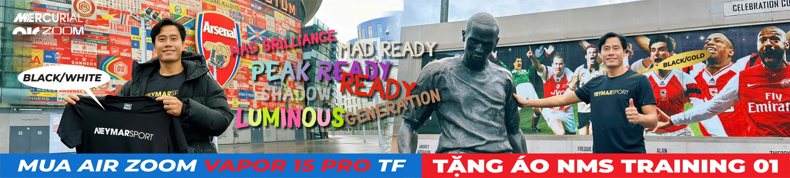
Biểu tượng của tốc độ. Thiết kế nhẹ, đế mỏng, tối ưu cho khả năng tăng tốc và bứt phá. Các ngôi sao như Mbappe, CR7 đều tin dùng dòng giày này.
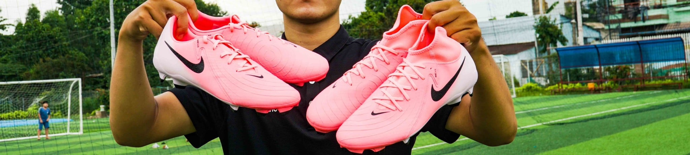
Dòng giày dành cho người chơi kỹ thuật, kiểm soát bóng và dứt điểm chính xác. Phù hợp với tiền đạo và tiền vệ tấn công.
Adidas là thương hiệu bóng đá lớn nhất châu Âu, nổi tiếng với sự bền bỉ và tinh tế trong thiết kế. SGUSPORT mang đến các dòng F50, X và Predator.
Dòng giày nhẹ, linh hoạt, tối ưu tốc độ, phù hợp với cầu thủ chạy cánh và tiền đạo.
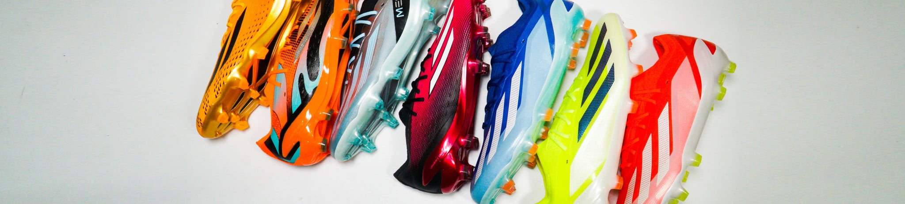
Dòng giày hiện đại mang phong cách tấn công mạnh mẽ. Thích hợp cho những cầu thủ ưa thích sự táo bạo và tốc độ.
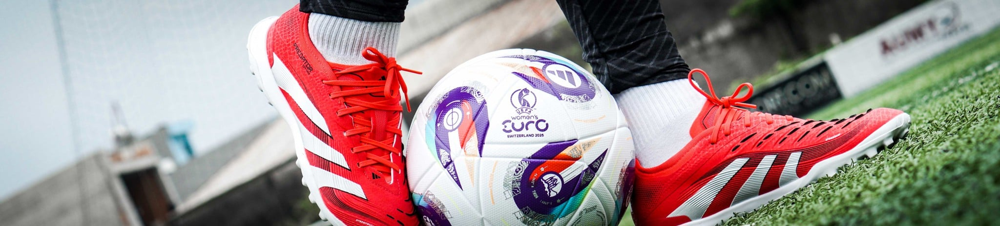
Predator nổi tiếng với khả năng kiểm soát bóng tuyệt vời và hỗ trợ sút xa mạnh mẽ. Dòng giày huyền thoại gắn liền với Beckham.
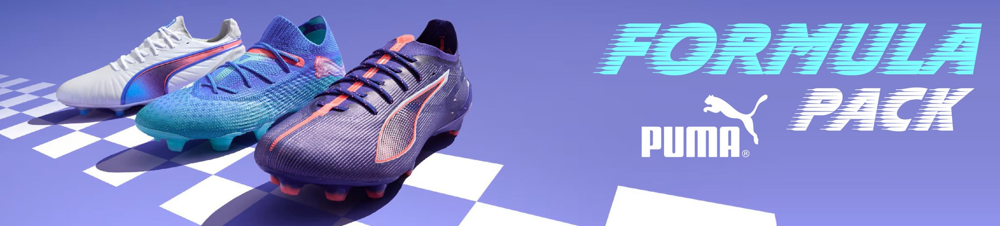
Puma mang đến sự pha trộn giữa tốc độ và sáng tạo. Các dòng King và Future là đại diện tiêu biểu của thương hiệu này.
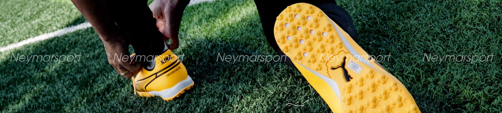
Giày da cao cấp mang phong cách cổ điển, cảm giác bóng mượt mà, thích hợp cho cầu thủ điều tiết lối chơi.
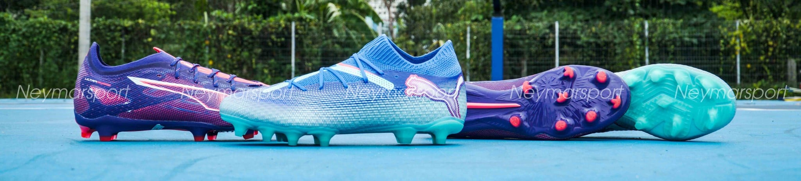
Dòng giày mang phong cách hiện đại, có dây giày tùy chỉnh, mang lại sự thoải mái và kiểm soát tối đa.
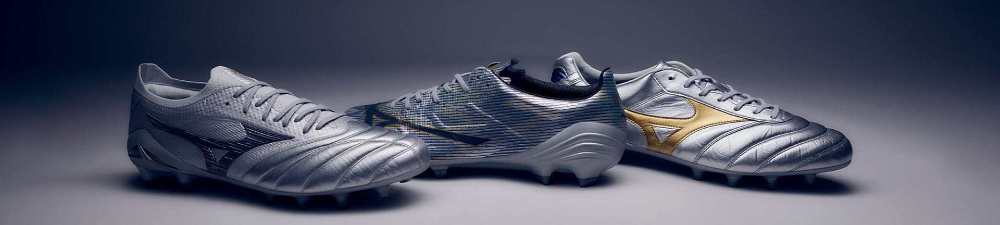
Mizuno – thương hiệu Nhật Bản nổi tiếng với độ bền và cảm giác bóng tuyệt vời. Hai dòng nổi bật là Alpha và Rebula.
Dòng giày tốc độ siêu nhẹ, phù hợp với cầu thủ chạy cánh, tăng tốc nhanh và linh hoạt.
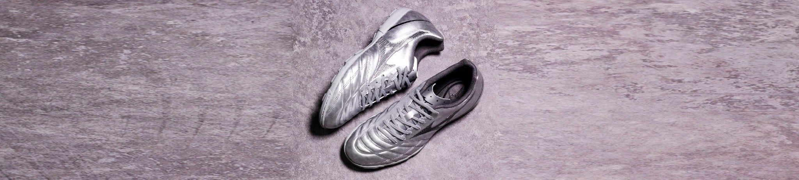
Dòng giày điều khiển bóng chính xác, mang lại cảm giác thật chân, được nhiều tiền vệ yêu thích.

Bóng đá là môn thể thao vua, nơi hội tụ niềm đam mê, tinh thần đồng đội và cảm xúc mãnh liệt của hàng triệu con người trên khắp thế giới. Trên sân cỏ, mọi khoảng cách về ngôn ngữ, màu da hay quốc tịch đều bị xóa nhòa, chỉ còn lại quả bóng tròn và khát khao chiến thắng. Bóng đá không chỉ là trò chơi, mà còn là nghệ thuật, là nơi con người thể hiện ý chí, kỹ thuật và sự sáng tạo. Mỗi pha chuyền, mỗi cú sút, mỗi bàn thắng đều chứa đựng công sức và cảm xúc của cả tập thể. Ở Việt Nam, bóng đá còn là niềm tự hào dân tộc, là sợi dây gắn kết con người trong từng khoảnh khắc chiến thắng
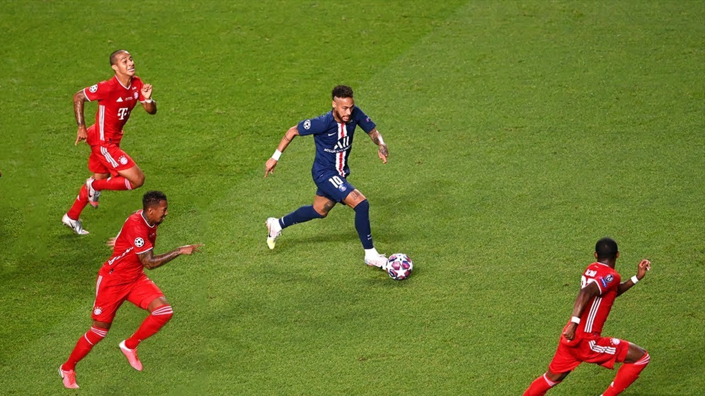
Từ những trận cầu đường phố đến các sân vận động lớn, bóng đá luôn mang đến niềm vui, niềm tin và động lực cho mọi người. Nó dạy ta biết nỗ lực, đoàn kết và không bao giờ bỏ cuộc — những giá trị vượt xa khỏi sân cỏ. Bóng đá không chỉ là môn thể thao, mà còn là biểu tượng của sự kiên cường và khát vọng vươn lên. Mỗi cầu thủ khi bước ra sân đều mang trong mình giấc mơ chiến thắng và tinh thần cống hiến hết mình vì tập thể. Người hâm mộ trên khán đài, dù ở bất cứ nơi đâu, đều chung một nhịp đập con tim khi đội bóng yêu thích ghi bàn hay chiến đấu đến phút cuối cùng. Bóng đá mang lại những cung bậc cảm xúc khác nhau — vui mừng, hồi hộp, tiếc nuối — nhưng chính điều đó làm nên sức hấp dẫn đặc biệt của nó. Không chỉ dành cho đàn ông, bóng đá ngày nay còn được yêu thích mạnh mẽ bởi phụ nữ và trẻ em.
Giày bóng đá là người bạn đồng hành không thể thiếu của mỗi cầu thủ trên sân cỏ. Không chỉ đơn thuần là một đôi giày, nó còn là công cụ giúp cầu thủ thể hiện phong cách, kỹ thuật và phong độ thi đấu. Mỗi đôi giày được thiết kế đặc biệt để phù hợp với từng loại sân — từ sân cỏ tự nhiên, cỏ nhân tạo cho đến futsal trong nhà. Đế giày có gai hoặc đinh giúp bám sân tốt hơn, tăng độ ổn định khi di chuyển và sút bóng. Các thương hiệu lớn như Nike, Adidas, Puma, Mizuno luôn không ngừng cải tiến công nghệ, mang đến những sản phẩm nhẹ hơn, linh hoạt hơn và tối ưu cảm giác bóng.
Chưa có tài khoản? Đăng ký
Đã có tài khoản? Đăng nhập